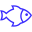

Numer telefonu: 728 183 081
Numer telefonu: 728 183 081 Email:
Email:  Data urodzenia: 22-04-1988
Data urodzenia: 22-04-1988 Miejsce zamieszkania: Łódź
Miejsce zamieszkania: ŁódźO mnie
Mam na imię Michał, programowaniem interesuję się od kilku miesięcy. Obecnie chodzę do liceum, chciałbym się przebranżowić i na poważnie zająć się programowaniem. Dodatkowo uczę się języka Angielskiego a w przyszłości chciałbym opanować język Niemiecki i Hiszpański.
Doświadczenie zawodowe
- 2019-obecnie: Avient - Pracownik produkcji
- 2016-2019: WM.sp.zoo - Pracownik produkcji
Języki
- Angielski - B1
- Polski - ojczysty
Wykształcenie
- 2022-obecnie: Liceum ogólnokształcące dla dorosłych
- 2001-2004: Gimnazjum nr. 25 w Łodzi
Zainteresowania
- 
Terrarystyka
-
Piłka nożna
-
Muzyka
-
Kino